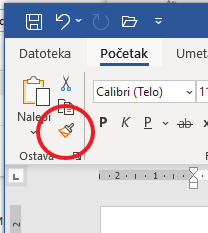
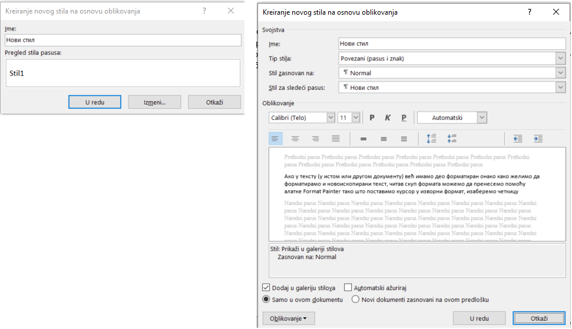
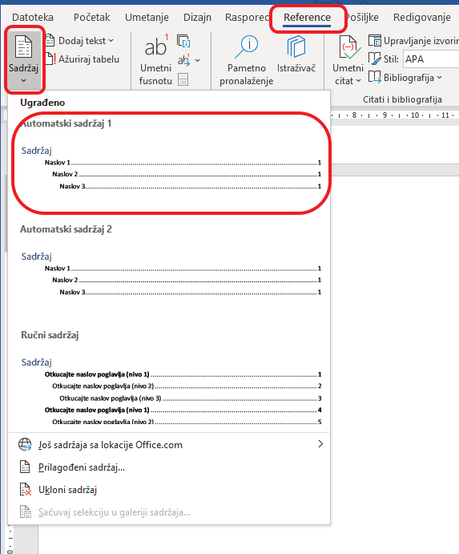

<!DOCTYPE html>
<html xmlns="http://www.w3.org/1999/xhtml" lang="sr-Cyrl"></html>
  <head>
    <meta charset="utf-8" />
    <meta name="viewport" content="width=device-width, initial-scale=1.0" />
    <title>Логичка структура текстуалног документа &#8212; 1_razred_IKT_DigitalnaPismenost</title>
    <link rel="stylesheet" href="../_static/pygments.css" type="text/css" />
    <link rel="stylesheet" href="../_static/basic.css" type="text/css" />
    <link rel="stylesheet" type="text/css" href="../_static/activecode.css" />
    <link rel="stylesheet" type="text/css" href="../_static/codemirror.css" />
    <link rel="stylesheet" type="text/css" href="../_static/clickable.css" />
    <link rel="stylesheet" type="text/css" href="../_static/pytutor.css" />
    <link rel="stylesheet" type="text/css" href="../_static/modal-basic.css" />
    <link rel="stylesheet" type="text/css" href="../_static/datafile.css" />
    <link rel="stylesheet" type="text/css" href="../_static/dragndrop.css" />
    <link rel="stylesheet" type="text/css" href="../_static/fitb.css" />
    <link rel="stylesheet" type="text/css" href="../_static/matrixeq.css" />
    <link rel="stylesheet" type="text/css" href="../_static/parsons.css" />
    <link rel="stylesheet" type="text/css" href="../_static/lib/prettify.css" />
    <link rel="stylesheet" type="text/css" href="../_static/poll.css" />
    <link rel="stylesheet" type="text/css" href="../_static/showEval.css" />
    <link rel="stylesheet" type="text/css" href="../_static/tabbedstuff.css" />
    <link rel="stylesheet" type="text/css" href="https://stackpath.bootstrapcdn.com/bootstrap/4.2.1/css/bootstrap.min.css" />
    <link rel="stylesheet" type="text/css" href="../_static/video.css" />
    <link rel="stylesheet" type="text/css" href="../_static/webgldemo.css" />
    <link rel="stylesheet" type="text/css" href="../_static/webglinteractive.css" />
    <link rel="stylesheet" type="text/css" href="../_static/karel.css" />
    <link rel="stylesheet" type="text/css" href="../_static/notes.css" />
    <link rel="stylesheet" href="../_static/user-highlights.css" type="text/css" />
    <link rel="stylesheet" href="https://use.fontawesome.com/releases/v5.1.1/css/all.css" type="text/css" />
    <link rel="stylesheet" href="../_static/bootstrap-4.0.0-dist/css/bootstrap.min.css" type="text/css" />
    <link rel="stylesheet" href="../_static/flatly.min.css" type="text/css" />
    <link rel="stylesheet" href="../_static/petlja.css" type="text/css" />
    <script id="documentation_options" data-url_root="../" src="../_static/documentation_options.js"></script>
    <script type="text/javascript" src="../_static/runestonebase.js"></script>
    <script type="text/javascript" src="../_static/jquery.js"></script>
    <script type="text/javascript" src="../_static/underscore.js"></script>
    <script type="text/javascript" src="../_static/doctools.js"></script>
    <script type="text/javascript" src="../_static/language_data.js"></script>
    <script type="text/javascript" src="../_static/jquery.highlight.js"></script>
    <script type="text/javascript" src="../_static/bookfuncs.js"></script>
    <script type="text/javascript" src="../_static/codemirror.js"></script>
    <script type="text/javascript" src="../_static/xml.js"></script>
    <script type="text/javascript" src="../_static/css.js"></script>
    <script type="text/javascript" src="../_static/python.js"></script>
    <script type="text/javascript" src="../_static/htmlmixed.js"></script>
    <script type="text/javascript" src="../_static/javascript.js"></script>
    <script type="text/javascript" src="../_static/jquery_i18n/CLDRPluralRuleParser.js"></script>
    <script type="text/javascript" src="../_static/jquery_i18n/jquery.i18n.js"></script>
    <script type="text/javascript" src="../_static/jquery_i18n/jquery.i18n.messagestore.js"></script>
    <script type="text/javascript" src="../_static/jquery_i18n/jquery.i18n.fallbacks.js"></script>
    <script type="text/javascript" src="../_static/jquery_i18n/jquery.i18n.language.js"></script>
    <script type="text/javascript" src="../_static/jquery_i18n/jquery.i18n.parser.js"></script>
    <script type="text/javascript" src="../_static/jquery_i18n/jquery.i18n.emitter.js"></script>
    <script type="text/javascript" src="../_static/jquery_i18n/jquery.i18n.emitter.bidi.js"></script>
    <script type="text/javascript" src="../_static/activecode-i18n.en.js"></script>
    <script type="text/javascript" src="../_static/skulpt.min.js"></script>
    <script type="text/javascript" src="../_static/skulpt-stdlib.js"></script>
    <script type="text/javascript" src="../_static/activecode.js"></script>
    <script type="text/javascript" src="../_static/clike.js"></script>
    <script type="text/javascript" src="../_static/timed_activecode.js"></script>
    <script type="text/javascript" src="../_static/animationbase.js"></script>
    <script type="text/javascript" src="../_static/mchoice.js"></script>
    <script type="text/javascript" src="../_static/timedmc.js"></script>
    <script type="text/javascript" src="../_static/timed.js"></script>
    <script type="text/javascript" src="../_static/mchoice-i18n.en.js"></script>
    <script type="text/javascript" src="../_static/clickable.js"></script>
    <script type="text/javascript" src="../_static/timedclickable.js"></script>
    <script type="text/javascript" src="../_static/d3.v2.min.js"></script>
    <script type="text/javascript" src="../_static/jquery.ba-bbq.min.js"></script>
    <script type="text/javascript" src="../_static/jquery.jsPlumb-1.3.10-all-min.js"></script>
    <script type="text/javascript" src="../_static/pytutor.js"></script>
    <script type="text/javascript" src="../_static/codelens.js"></script>
    <script type="text/javascript" src="../_static/datafile.js"></script>
    <script type="text/javascript" src="../_static/dragndrop.js"></script>
    <script type="text/javascript" src="../_static/timeddnd.js"></script>
    <script type="text/javascript" src="../_static/dragndrop-i18n.en.js"></script>
    <script type="text/javascript" src="../_static/fitb.js"></script>
    <script type="text/javascript" src="../_static/timedfitb.js"></script>
    <script type="text/javascript" src="../_static/fitb-i18n.en.js"></script>
    <script type="text/javascript" src="../_static/matrixeq.js"></script>
    <script type="text/javascript" src="../_static/lib/prettify.js"></script>
    <script type="text/javascript" src="../_static/lib/hammer.min.js"></script>
    <script type="text/javascript" src="../_static/parsons.js"></script>
    <script type="text/javascript" src="../_static/parsons-i18n.en.js"></script>
    <script type="text/javascript" src="../_static/timedparsons.js"></script>
    <script type="text/javascript" src="../_static/poll.js"></script>
    <script type="text/javascript" src="../_static/reveal.js"></script>
    <script type="text/javascript" src="../_static/shortanswer.js"></script>
    <script type="text/javascript" src="../_static/timed_shortanswer.js"></script>
    <script type="text/javascript" src="../_static/showEval.js"></script>
    <script type="text/javascript" src="../_static/tabbedstuff.js"></script>
    <script type="text/javascript" src="../_static/runestonevideo.js"></script>
    <script type="text/javascript" src="../_static/webglinteractive.js"></script>
    <script type="text/javascript" src="../_static/FileSaver.min.js"></script>
    <script type="text/javascript" src="../_static/Blob.js"></script>
    <script type="text/javascript" src="../_static/karelCorner.js"></script>
    <script type="text/javascript" src="../_static/karelRobot.js"></script>
    <script type="text/javascript" src="../_static/karelWorld.js"></script>
    <script type="text/javascript" src="../_static/karelRobotDrawer.js"></script>
    <script type="text/javascript" src="../_static/karelUI.js"></script>
    <script type="text/javascript" src="../_static/karel.js"></script>
    <script type="text/javascript" src="../_static/karel-i18n.en.js"></script>
    <script type="text/javascript" src="../_static/notes.js"></script>
    <script type="text/javascript" src="../_static/pygamelib-init.js"></script>
    <script type="text/javascript" src="../_static/blockly/blockly_compressed.js"></script>
    <script type="text/javascript" src="../_static/blockly/blocks_compressed.js"></script>
    <script type="text/javascript" src="../_static/blockly/python_compressed.js"></script>
    <script type="text/javascript" src="../_static/blockly/msg-sr.js"></script>
    <script type="text/javascript" src="../_static/blockpy/utilities.js"></script>
    <script type="text/javascript" src="../_static/blockpy/python_errors.js"></script>
    <script type="text/javascript" src="../_static/blockpy/ast_node_visitor.js"></script>
    <script type="text/javascript" src="../_static/blockpy/abstract_interpreter.js"></script>
    <script type="text/javascript" src="../_static/blockpy/pytifa.js"></script>
    <script type="text/javascript" src="../_static/blockpy/abstract_interpreter_definitions.js"></script>
    <script type="text/javascript" src="../_static/blockpy/python_to_blockly.js"></script>
    <script type="text/javascript" src="../_static/blockpy/imported.js"></script>
    <script type="text/javascript" src="../_static/blockpy/blocks/class.js"></script>
    <script type="text/javascript" src="../_static/blockpy/blocks/comment.js"></script>
    <script type="text/javascript" src="../_static/blockpy/blocks/comprehensions.js"></script>
    <script type="text/javascript" src="../_static/blockpy/blocks/dict.js"></script>
    <script type="text/javascript" src="../_static/blockpy/blocks/if.js"></script>
    <script type="text/javascript" src="../_static/blockpy/blocks/io.js"></script>
    <script type="text/javascript" src="../_static/blockpy/blocks/lists.js"></script>
    <script type="text/javascript" src="../_static/blockpy/blocks/sets.js"></script>
    <script type="text/javascript" src="../_static/blockpy/blocks/loops.js"></script>
    <script type="text/javascript" src="../_static/blockpy/blocks/parking.js"></script>
    <script type="text/javascript" src="../_static/blockpy/blocks/tuple.js"></script>
    <script type="text/javascript" src="../_static/blockpy/blocks/turtles.js"></script>
    <script type="text/javascript" src="../_static/blockpy/blocks/text.js"></script>
    <script type="text/javascript" src="../_static/blockpy-modal.js"></script>
    <script type="text/javascript" src="../_static/translations.js"></script>
    <script async="async" type="text/javascript" src="https://cdnjs.cloudflare.com/ajax/libs/mathjax/2.7.5/latest.js?config=TeX-AMS-MML_HTMLorMML"></script>
    <script type="text/javascript" src="../_static/mchoice-i18n.sr-Cyrl.js"></script>
    <script type="text/javascript" src="../_static/mchoice-i18n.sr.js"></script>
    <script type="text/javascript" src="../_static/mchoice-i18n.sr-Latn.js"></script>
    <script type="text/javascript" src="../_static/dragndrop-i18n.sr-Cyrl.js"></script>
    <script type="text/javascript" src="../_static/dragndrop-i18n.sr.js"></script>
    <script type="text/javascript" src="../_static/dragndrop-i18n.sr-Latn.js"></script>
    <script type="text/javascript" src="../_static/fitb-i18n.sr-Cyrl.js"></script>
    <script type="text/javascript" src="../_static/fitb-i18n.sr.js"></script>
    <script type="text/javascript" src="../_static/fitb-i18n.sr-Latn.js"></script>
    <script type="text/javascript" src="../_static/parsons-i18n.sr-Cyrl.js"></script>
    <script type="text/javascript" src="../_static/parsons-i18n.sr.js"></script>
    <script type="text/javascript" src="../_static/parsons-i18n.sr-Latn.js"></script>
    <script type="text/javascript" src="../_static/activecode-i18n.sr-Cyrl.js"></script>
    <script type="text/javascript" src="../_static/activecode-i18n.sr.js"></script>
    <script type="text/javascript" src="../_static/activecode-i18n.sr-Latn.js"></script>
    <script type="text/javascript" src="../_static/jquery-ui-1.10.3.custom.min.js"></script>
    <script type="text/javascript" src="../_static/jquery-fix.js"></script>
    <script type="text/javascript" src="../_static/bootstrap-4.0.0-dist/js/bootstrap.min.js"></script>
    <script type="text/javascript" src="../_static/bootstrap-4.0.0-dist/js/bootstrap.bundle.min.js"></script>
    <script type="text/javascript" src="../_static/bootstrap-sphinx.js"></script>
    <script type="text/javascript" src="../_static/waypoints.min.js"></script>
    <script type="text/javascript" src="../_static/rangy-core.js"></script>
    <script type="text/javascript" src="../_static/rangy-textrange.js"></script>
    <script type="text/javascript" src="../_static/rangy-cssclassapplier.js"></script>
    <script type="text/javascript" src="../_static/user-highlights.js"></script>
    <script type="text/javascript" src="../_static/jquery.idle-timer.js"></script>
    <script type="text/javascript" src="../_static/processing-1.4.1.min.js"></script>
    <script type="text/javascript" src="../_static/jquery.hotkey.js"></script>
    <script type="text/javascript" src="../_static/jquery-migrate-1.2.1.min.js"></script>
    <script type="text/javascript" src="../_static/course-errors.js"></script>
    <script type="text/javascript" src="../_static/petlja.js"></script>
    <link rel="index" title="Index" href="../genindex.html" />
    <link rel="search" title="Search" href="../search.html" />
    <link rel="next" title="Задаци за вежбу 4.4" href="zkviz_w4.html" />
    <link rel="prev" title="Садржај лекције 4.4" href="uvod_lekcija_w4.html" />
<meta charset='utf-8'>
<meta http-equiv='X-UA-Compatible' content='IE=edge,chrome=1'>
<meta content='width=device-width, initial-scale=1.0, maximum-scale=1.0, user-scalable=0' name='viewport' />
<link rel="shortcut icon" href="../_static/favicon.ico" type="image/ico" />
<script type="text/javascript">
  eBookConfig = {};
  eBookConfig.host = 'http://127.0.0.1:8000' ? 'http://127.0.0.1:8000' : 'http://127.0.0.1:8000';
  eBookConfig.app = eBookConfig.host + '/runestone';
  eBookConfig.ajaxURL = eBookConfig.app + '/ajax/';
  eBookConfig.course = '1_razred_IKT_DigitalnaPismenost';
  eBookConfig.logLevel = '0';
  eBookConfig.loginRequired = 'false';
  eBookConfig.build_info = "";
  eBookConfig.isLoggedIn = false;
  eBookConfig.useRunestoneServices = 'false';
  eBookConfig.python3 = 'true';
  eBookConfig.basecourse = 'Primer_kurs';
  eBookConfig.runestone_version = '';
  eBookConfig.imagesDir = '../_images/';
  eBookConfig.staticDir = '../_static/';
  if (typeof (Sk) != "undefined")
    Sk.imgPath = eBookConfig.imagesDir;
</script>

<div id="fb-root"></div>


  </head><body>


<!-- Begin navbar -->

<nav id="navbar" class="navbar navbar-default navbar-fixed-top" role="navigation">

  <a href="https://petlja.org"> </a>
  <a href="https://petlja.org/net.kabinet"> </a>
  <div class="container">

    <div class="navbar-header">
      <button type="button" class="navbar-toggle collapsed" data-toggle="collapse"
        data-target="#bs-example-navbar-collapse-1">
        <span class="sr-only">Toggle navigation</span>
        <span class="icon-bar"></span>
        <span class="icon-bar"></span>
        <span class="icon-bar"></span>
      </button>
    </div>

    <div class="collapse navbar-collapse" id="bs-example-navbar-collapse-1"
      style="margin-left: 25px; text-align: center;">
      <ul class="nav navbar-nav">
        <li class="active"><a
            href="../">1_razred_IKT_DigitalnaPismenost</a>
        </li>
      </ul>
    </div>
  </div>
</nav>

<div style="margin-top: 65px;font-size: 20px; width: 20%; float: left; height: calc(100vh - 115px);">
  
      <div class="sphinxsidebar" role="navigation" aria-label="main navigation">
        <div class="sphinxsidebarwrapper"><ul>
    
    <div class="lecture-div" id=lecture-аУвод>
        <i class="fas fa-caret-right caret-position"></i>
        <i class="fas fa-caret-down caret-position d-none"></i>
        <h5>Увод</h5>
    </div>

    <div class="d-none">
        
        
        <a href=../аУвод/uvodni_tekst.html>
        
        <div class="activity-div" id=activity-uvodni_tekst>
            
            <i class="fas fa-file-alt activity-icon"></i>
            
            Увод у курс
        </div>
    </a>
    

    </diV>
    
    <div class="lecture-div" id=lecture-Тема1>
        <i class="fas fa-caret-right caret-position"></i>
        <i class="fas fa-caret-down caret-position d-none"></i>
        <h5>1. Информационо - комуникационе технологије у савременом друштву</h5>
    </div>

    <div class="d-none">
        
        
        <a href=../Тема1/tekst_tema_1.html>
        
        <div class="activity-div" id=activity-tekst_tema_1>
            
            <i class="fas fa-file-alt activity-icon"></i>
            
            Садржај теме 1
        </div>
    </a>
    

    </diV>
    
    <div class="lecture-div" id=lecture-Лекција1>
        <i class="fas fa-caret-right caret-position"></i>
        <i class="fas fa-caret-down caret-position d-none"></i>
        <h5>1.1 Информационо-комуникационе технологије</h5>
    </div>

    <div class="d-none">
        
        
        <a href=../Лекција1/uvod_lekcija_1.html>
        
        <div class="activity-div" id=activity-uvod_lekcija_1>
            
            <i class="fas fa-file-alt activity-icon"></i>
            
            Садржај лекције 1.1
        </div>
    </a>
    
        
        <a href=../Лекција1/IKT_lekcija_1.html>
        
        <div class="activity-div" id=activity-IKT_lekcija_1>
            
            <i class="fas fa-file-alt activity-icon"></i>
            
            1.1 ИКТ у савременом друштву
        </div>
    </a>
    
        
        <a href=../Лекција1/zkviz_1.html>
        
        <div class="activity-div" id=activity-zkviz_1>
            
            <i class="far fa-question-circle activity-icon"></i>
            
            Квиз 1.1
        </div>
    </a>
    

    </diV>
    
    <div class="lecture-div" id=lecture-Лекција2>
        <i class="fas fa-caret-right caret-position"></i>
        <i class="fas fa-caret-down caret-position d-none"></i>
        <h5>1.2 Рачунарске мреже и интернет</h5>
    </div>

    <div class="d-none">
        
        
        <a href=../Лекција2/uvod_lekcija_2.html>
        
        <div class="activity-div" id=activity-uvod_lekcija_2>
            
            <i class="fas fa-file-alt activity-icon"></i>
            
            Садржај лекције 1.2
        </div>
    </a>
    
        
        <a href=../Лекција2/mreze_lekcija_2.html>
        
        <div class="activity-div" id=activity-mreze_lekcija_2>
            
            <i class="fas fa-file-alt activity-icon"></i>
            
            Рачунарске мреже и интернет
        </div>
    </a>
    
        
        <a href=../Лекција2/zkviz_2.html>
        
        <div class="activity-div" id=activity-zkviz_2>
            
            <i class="far fa-question-circle activity-icon"></i>
            
            Квиз 1.2
        </div>
    </a>
    

    </diV>
    
    <div class="lecture-div" id=lecture-Лекција3>
        <i class="fas fa-caret-right caret-position"></i>
        <i class="fas fa-caret-down caret-position d-none"></i>
        <h5>1.3 Коришћење интернета</h5>
    </div>

    <div class="d-none">
        
        
        <a href=../Лекција3/uvod_lekcija_3.html>
        
        <div class="activity-div" id=activity-uvod_lekcija_3>
            
            <i class="fas fa-file-alt activity-icon"></i>
            
            Садржај лекције 1.3
        </div>
    </a>
    
        
        <a href=../Лекција3/internet_servisi_lekcija_3.html>
        
        <div class="activity-div" id=activity-internet_servisi_lekcija_3>
            
            <i class="fas fa-file-alt activity-icon"></i>
            
            Интернет сервиси
        </div>
    </a>
    
        
        <a href=../Лекција3/komunikacija_na_internetu_lekcija_3.html>
        
        <div class="activity-div" id=activity-komunikacija_na_internetu_lekcija_3>
            
            <i class="fas fa-file-alt activity-icon"></i>
            
            Начини и правила комуникације и лепог понашања на интернету
        </div>
    </a>
    
        
        <a href=../Лекција3/zkviz_3.html>
        
        <div class="activity-div" id=activity-zkviz_3>
            
            <i class="far fa-question-circle activity-icon"></i>
            
            Квиз 1.3
        </div>
    </a>
    

    </diV>
    
    <div class="lecture-div" id=lecture-Лекција4>
        <i class="fas fa-caret-right caret-position"></i>
        <i class="fas fa-caret-down caret-position d-none"></i>
        <h5>1.4 Ауторска права, веродостојност информација, заштита и безбедност</h5>
    </div>

    <div class="d-none">
        
        
        <a href=../Лекција4/uvod_lekcija_4.html>
        
        <div class="activity-div" id=activity-uvod_lekcija_4>
            
            <i class="fas fa-file-alt activity-icon"></i>
            
            Садржај лекције 1.4
        </div>
    </a>
    
        
        <a href=../Лекција4/prava_verodostojnost_lekcija_4.html>
        
        <div class="activity-div" id=activity-prava_verodostojnost_lekcija_4>
            
            <i class="fas fa-file-alt activity-icon"></i>
            
            Ауторска права и веродостојност информација
        </div>
    </a>
    
        
        <a href=../Лекција4/zastita_bezbednost_lekcija_4.html>
        
        <div class="activity-div" id=activity-zastita_bezbednost_lekcija_4>
            
            <i class="fas fa-file-alt activity-icon"></i>
            
            Заштита личних података и приватност
        </div>
    </a>
    
        
        <a href=../Лекција4/uticaji_lekcija_4.html>
        
        <div class="activity-div" id=activity-uticaji_lekcija_4>
            
            <i class="fas fa-file-alt activity-icon"></i>
            
            Утицаји ИКТ на здравље и околину
        </div>
    </a>
    
        
        <a href=../Лекција4/sve_boje_lekcija_4.html>
        
        <div class="activity-div" id=activity-sve_boje_lekcija_4>
            
            <i class="fas fa-file-alt activity-icon"></i>
            
            Све боје интернета
        </div>
    </a>
    
        
        <a href=../Лекција4/zkviz_4.html>
        
        <div class="activity-div" id=activity-zkviz_4>
            
            <i class="far fa-question-circle activity-icon"></i>
            
            Квиз 1.4
        </div>
    </a>
    

    </diV>
    
    <div class="lecture-div" id=lecture-Лекција5>
        <i class="fas fa-caret-right caret-position"></i>
        <i class="fas fa-caret-down caret-position d-none"></i>
        <h5>1.5 Развој ИКТ</h5>
    </div>

    <div class="d-none">
        
        
        <a href=../Лекција5/uvod_lekcija_5.html>
        
        <div class="activity-div" id=activity-uvod_lekcija_5>
            
            <i class="fas fa-file-alt activity-icon"></i>
            
            Садржај лекције 1.5
        </div>
    </a>
    
        
        <a href=../Лекција5/istorijski_razvoj_lekcija_5.html>
        
        <div class="activity-div" id=activity-istorijski_razvoj_lekcija_5>
            
            <i class="fas fa-file-alt activity-icon"></i>
            
            Историјски развој ИКТ
        </div>
    </a>
    
        
        <a href=../Лекција5/generacije_elektronskih_lekcija_5.html>
        
        <div class="activity-div" id=activity-generacije_elektronskih_lekcija_5>
            
            <i class="fas fa-file-alt activity-icon"></i>
            
            Генерације електронских рачунара
        </div>
    </a>
    
        
        <a href=../Лекција5/zkviz_5.html>
        
        <div class="activity-div" id=activity-zkviz_5>
            
            <i class="far fa-question-circle activity-icon"></i>
            
            Квиз 1.5
        </div>
    </a>
    

    </diV>
    
    <div class="lecture-div" id=lecture-Тема2>
        <i class="fas fa-caret-right caret-position"></i>
        <i class="fas fa-caret-down caret-position d-none"></i>
        <h5>2. Рачунарство</h5>
    </div>

    <div class="d-none">
        
        
        <a href=../Тема2/tekst_tema_2.html>
        
        <div class="activity-div" id=activity-tekst_tema_2>
            
            <i class="fas fa-file-alt activity-icon"></i>
            
            Садржај теме 2
        </div>
    </a>
    

    </diV>
    
    <div class="lecture-div" id=lecture-Лекција6>
        <i class="fas fa-caret-right caret-position"></i>
        <i class="fas fa-caret-down caret-position d-none"></i>
        <h5>2.1 Принципи рада рачунара</h5>
    </div>

    <div class="d-none">
        
        
        <a href=../Лекција6/uvod_lekcija_6.html>
        
        <div class="activity-div" id=activity-uvod_lekcija_6>
            
            <i class="fas fa-file-alt activity-icon"></i>
            
            Садржај лекције 2.1
        </div>
    </a>
    
        
        <a href=../Лекција6/kako_rade_računari_lekcija_6.html>
        
        <div class="activity-div" id=activity-kako_rade_računari_lekcija_6>
            
            <i class="fas fa-file-alt activity-icon"></i>
            
            Како раде рачунари
        </div>
    </a>
    
        
        <a href=../Лекција6/predstavljanje_podataka_lekcija_6.html>
        
        <div class="activity-div" id=activity-predstavljanje_podataka_lekcija_6>
            
            <i class="fas fa-file-alt activity-icon"></i>
            
            Представљање података у рачунару
        </div>
    </a>
    
        
        <a href=../Лекција6/zkviz_6.html>
        
        <div class="activity-div" id=activity-zkviz_6>
            
            <i class="far fa-question-circle activity-icon"></i>
            
            Квиз 2.1
        </div>
    </a>
    

    </diV>
    
    <div class="lecture-div" id=lecture-Лекција7>
        <i class="fas fa-caret-right caret-position"></i>
        <i class="fas fa-caret-down caret-position d-none"></i>
        <h5>2.2 Представљање бројева и рачунање са различитим основама</h5>
    </div>

    <div class="d-none">
        
        
        <a href=../Лекција7/uvod_lekcija_7.html>
        
        <div class="activity-div" id=activity-uvod_lekcija_7>
            
            <i class="fas fa-file-alt activity-icon"></i>
            
            Садржај лекције 2.2
        </div>
    </a>
    
        
        <a href=../Лекција7/predstavljanje_racunanje_lekcija_7.html>
        
        <div class="activity-div" id=activity-predstavljanje_racunanje_lekcija_7>
            
            <i class="fas fa-file-alt activity-icon"></i>
            
            Представљање бројева и рачунање са различитим основама
        </div>
    </a>
    
        
        <a href=../Лекција7/zkviz_7.html>
        
        <div class="activity-div" id=activity-zkviz_7>
            
            <i class="far fa-question-circle activity-icon"></i>
            
            Квиз 2.2
        </div>
    </a>
    

    </diV>
    
    <div class="lecture-div" id=lecture-Лекција8>
        <i class="fas fa-caret-right caret-position"></i>
        <i class="fas fa-caret-down caret-position d-none"></i>
        <h5>2.3 Хардверске компоненте рачунарских система</h5>
    </div>

    <div class="d-none">
        
        
        <a href=../Лекција8/uvod_lekcija_8.html>
        
        <div class="activity-div" id=activity-uvod_lekcija_8>
            
            <i class="fas fa-file-alt activity-icon"></i>
            
            Садржај лекције 2.3
        </div>
    </a>
    
        
        <a href=../Лекција8/hardver_lekcija_8.html>
        
        <div class="activity-div" id=activity-hardver_lekcija_8>
            
            <i class="fas fa-file-alt activity-icon"></i>
            
            Хардвер
        </div>
    </a>
    
        
        <a href=../Лекција8/zkviz_8.html>
        
        <div class="activity-div" id=activity-zkviz_8>
            
            <i class="far fa-question-circle activity-icon"></i>
            
            Квиз 2.3
        </div>
    </a>
    

    </diV>
    
    <div class="lecture-div" id=lecture-Лекција9>
        <i class="fas fa-caret-right caret-position"></i>
        <i class="fas fa-caret-down caret-position d-none"></i>
        <h5>2.4 Софтверске компоненте рачунарских система</h5>
    </div>

    <div class="d-none">
        
        
        <a href=../Лекција9/uvod_lekcija_9.html>
        
        <div class="activity-div" id=activity-uvod_lekcija_9>
            
            <i class="fas fa-file-alt activity-icon"></i>
            
            Садржај лекције 2.4
        </div>
    </a>
    
        
        <a href=../Лекција9/softver_lekcija_9.html>
        
        <div class="activity-div" id=activity-softver_lekcija_9>
            
            <i class="fas fa-file-alt activity-icon"></i>
            
            Софтвер
        </div>
    </a>
    
        
        <a href=../Лекција9/zkviz_9.html>
        
        <div class="activity-div" id=activity-zkviz_9>
            
            <i class="far fa-question-circle activity-icon"></i>
            
            Квиз 2.4
        </div>
    </a>
    

    </diV>
    
    <div class="lecture-div" id=lecture-Тема3>
        <i class="fas fa-caret-right caret-position"></i>
        <i class="fas fa-caret-down caret-position d-none"></i>
        <h5>3. Организација података и прилагођавање радног окружења</h5>
    </div>

    <div class="d-none">
        
        
        <a href=../Тема3/tekst_tema_3.html>
        
        <div class="activity-div" id=activity-tekst_tema_3>
            
            <i class="fas fa-file-alt activity-icon"></i>
            
            Садржај теме 3
        </div>
    </a>
    

    </diV>
    
    <div class="lecture-div" id=lecture-Лекција10>
        <i class="fas fa-caret-right caret-position"></i>
        <i class="fas fa-caret-down caret-position d-none"></i>
        <h5>3.1 Графички кориснички интерфејс</h5>
    </div>

    <div class="d-none">
        
        
        <a href=../Лекција10/uvod_lekcija_10.html>
        
        <div class="activity-div" id=activity-uvod_lekcija_10>
            
            <i class="fas fa-file-alt activity-icon"></i>
            
            Садржај лекције 3.1
        </div>
    </a>
    
        
        <a href=../Лекција10/gki_lekcija_10.html>
        
        <div class="activity-div" id=activity-gki_lekcija_10>
            
            <i class="fas fa-file-alt activity-icon"></i>
            
            Графички кориснички интерфејс - основни елементи
        </div>
    </a>
    
        
        <a href=../Лекција10/gki_podešavanja_lekcija_10.html>
        
        <div class="activity-div" id=activity-gki_podešavanja_lekcija_10>
            
            <i class="fas fa-file-alt activity-icon"></i>
            
            Графички кориснички интерфејс - основна подешавања
        </div>
    </a>
    
        
        <a href=../Лекција10/zkviz_10.html>
        
        <div class="activity-div" id=activity-zkviz_10>
            
            <i class="far fa-question-circle activity-icon"></i>
            
            Квиз 3.1
        </div>
    </a>
    

    </diV>
    
    <div class="lecture-div" id=lecture-Лекција11>
        <i class="fas fa-caret-right caret-position"></i>
        <i class="fas fa-caret-down caret-position d-none"></i>
        <h5>3.2 Рад са документима и системом датотека</h5>
    </div>

    <div class="d-none">
        
        
        <a href=../Лекција11/uvod_lekcija_11.html>
        
        <div class="activity-div" id=activity-uvod_lekcija_11>
            
            <i class="fas fa-file-alt activity-icon"></i>
            
            Садржај лекције 3.2
        </div>
    </a>
    
        
        <a href=../Лекција11/dokumenti_lekcija_11.html>
        
        <div class="activity-div" id=activity-dokumenti_lekcija_11>
            
            <i class="fas fa-file-alt activity-icon"></i>
            
            Рад са документима и системом датотека
        </div>
    </a>
    
        
        <a href=../Лекција11/zkviz_11.html>
        
        <div class="activity-div" id=activity-zkviz_11>
            
            <i class="far fa-question-circle activity-icon"></i>
            
            Квиз 3.2
        </div>
    </a>
    

    </diV>
    
    <div class="lecture-div" id=lecture-Лекција12>
        <i class="fas fa-caret-right caret-position"></i>
        <i class="fas fa-caret-down caret-position d-none"></i>
        <h5>3.3 Архивирање, слање, чување, заштита.</h5>
    </div>

    <div class="d-none">
        
        
        <a href=../Лекција12/uvod_lekcija_12.html>
        
        <div class="activity-div" id=activity-uvod_lekcija_12>
            
            <i class="fas fa-file-alt activity-icon"></i>
            
            Садржај лекције 3.3
        </div>
    </a>
    
        
        <a href=../Лекција12/arhiviranje_slanje_lekcija_12.html>
        
        <div class="activity-div" id=activity-arhiviranje_slanje_lekcija_12>
            
            <i class="fas fa-file-alt activity-icon"></i>
            
            Архивирање, слање и чување датотека.
        </div>
    </a>
    
        
        <a href=../Лекција12/dokumenti_oblak_lekcija_12.html>
        
        <div class="activity-div" id=activity-dokumenti_oblak_lekcija_12>
            
            <i class="fas fa-file-alt activity-icon"></i>
            
            Рад са документима и системом датотека „у облаку”
        </div>
    </a>
    
        
        <a href=../Лекција12/zastita_lekcija_12.html>
        
        <div class="activity-div" id=activity-zastita_lekcija_12>
            
            <i class="fas fa-file-alt activity-icon"></i>
            
            Средства и методе заштите рачунара и информација
        </div>
    </a>
    
        
        <a href=../Лекција12/zkviz_12.html>
        
        <div class="activity-div" id=activity-zkviz_12>
            
            <i class="far fa-question-circle activity-icon"></i>
            
            Квиз 3.3
        </div>
    </a>
    

    </diV>
    
    <div class="lecture-div" id=lecture-Тема4>
        <i class="fas fa-caret-right caret-position"></i>
        <i class="fas fa-caret-down caret-position d-none"></i>
        <h5>4. Креирање и уређевање дигиталних докумената</h5>
    </div>

    <div class="d-none">
        
        
        <a href=../Тема4/tekst_tema_4.html>
        
        <div class="activity-div" id=activity-tekst_tema_4>
            
            <i class="fas fa-file-alt activity-icon"></i>
            
            Садржај теме 4
        </div>
    </a>
    

    </diV>
    
    <div class="lecture-div" id=lecture-ЛекцијаW1>
        <i class="fas fa-caret-right caret-position"></i>
        <i class="fas fa-caret-down caret-position d-none"></i>
        <h5>4.1 Креирање, уређивање и форматирање дигиталних текстова</h5>
    </div>

    <div class="d-none">
        
        
        <a href=../ЛекцијаW1/uvod_lekcija_w1.html>
        
        <div class="activity-div" id=activity-uvod_lekcija_w1>
            
            <i class="fas fa-file-alt activity-icon"></i>
            
            Садржај лекције 4.1
        </div>
    </a>
    
        
        <a href=../ЛекцијаW1/tekst_lekcija_w1.html>
        
        <div class="activity-div" id=activity-tekst_lekcija_w1>
            
            <i class="fas fa-file-alt activity-icon"></i>
            
            Креирање, уређивање и форматирање дигиталних текстова
        </div>
    </a>
    
        
        <a href=../ЛекцијаW1/zkviz_w1.html>
        
        <div class="activity-div" id=activity-zkviz_w1>
            
            <i class="fas fa-file-alt activity-icon"></i>
            
            Задаци 4.1
        </div>
    </a>
    

    </diV>
    
    <div class="lecture-div" id=lecture-ЛекцијаW2>
        <i class="fas fa-caret-right caret-position"></i>
        <i class="fas fa-caret-down caret-position d-none"></i>
        <h5>4.2 Форматирање параграфа</h5>
    </div>

    <div class="d-none">
        
        
        <a href=../ЛекцијаW2/uvod_lekcija_w2.html>
        
        <div class="activity-div" id=activity-uvod_lekcija_w2>
            
            <i class="fas fa-file-alt activity-icon"></i>
            
            Садржај лекције 4.2
        </div>
    </a>
    
        
        <a href=../ЛекцијаW2/tekst_lekcija_w2.html>
        
        <div class="activity-div" id=activity-tekst_lekcija_w2>
            
            <i class="fas fa-file-alt activity-icon"></i>
            
            Форматирање параграфа
        </div>
    </a>
    
        
        <a href=../ЛекцијаW2/zkviz_w2.html>
        
        <div class="activity-div" id=activity-zkviz_w2>
            
            <i class="fas fa-file-alt activity-icon"></i>
            
            Задаци 4.2
        </div>
    </a>
    

    </diV>
    
    <div class="lecture-div" id=lecture-ЛекцијаW3>
        <i class="fas fa-caret-right caret-position"></i>
        <i class="fas fa-caret-down caret-position d-none"></i>
        <h5>4.3 Посебни елементи у тексту</h5>
    </div>

    <div class="d-none">
        
        
        <a href=../ЛекцијаW3/uvod_lekcija_w3.html>
        
        <div class="activity-div" id=activity-uvod_lekcija_w3>
            
            <i class="fas fa-file-alt activity-icon"></i>
            
            Садржај лекције 4.3
        </div>
    </a>
    
        
        <a href=../ЛекцијаW3/tekst_lekcija_slike_w3.html>
        
        <div class="activity-div" id=activity-tekst_lekcija_slike_w3>
            
            <i class="fas fa-file-alt activity-icon"></i>
            
            Уметање слика и облика
        </div>
    </a>
    
        
        <a href=../ЛекцијаW3/tekst_lekcija_tabele_w3.html>
        
        <div class="activity-div" id=activity-tekst_lekcija_tabele_w3>
            
            <i class="fas fa-file-alt activity-icon"></i>
            
            Уметање табела
        </div>
    </a>
    
        
        <a href=../ЛекцијаW3/tekst_lekcija_formule_w3.html>
        
        <div class="activity-div" id=activity-tekst_lekcija_formule_w3>
            
            <i class="fas fa-file-alt activity-icon"></i>
            
            Уметање симбола и формула
        </div>
    </a>
    
        
        <a href=../ЛекцијаW3/zkviz_w3.html>
        
        <div class="activity-div" id=activity-zkviz_w3>
            
            <i class="fas fa-file-alt activity-icon"></i>
            
            Задаци 4.3
        </div>
    </a>
    

    </diV>
    
    <div class="lecture-div" id=lecture-ЛекцијаW4>
        <i class="fas fa-caret-right caret-position"></i>
        <i class="fas fa-caret-down caret-position d-none"></i>
        <h5>4.4 Логичка структура текстуалног документа</h5>
    </div>

    <div class="d-none">
        
        
        <a href=../ЛекцијаW4/uvod_lekcija_w4.html>
        
        <div class="activity-div" id=activity-uvod_lekcija_w4>
            
            <i class="fas fa-file-alt activity-icon"></i>
            
            Садржај лекције 4.4
        </div>
    </a>
    
        
        <a href=../ЛекцијаW4/tekst_lekcija_w4.html>
        
        <div class="activity-div" id=activity-tekst_lekcija_w4>
            
            <i class="fas fa-file-alt activity-icon"></i>
            
            Логичка структура текстуалног документа
        </div>
    </a>
    
        
        <a href=../ЛекцијаW4/zkviz_w4.html>
        
        <div class="activity-div" id=activity-zkviz_w4>
            
            <i class="fas fa-file-alt activity-icon"></i>
            
            Задаци 4.4
        </div>
    </a>
    

    </diV>
    
    <div class="lecture-div" id=lecture-ЛекцијаW5>
        <i class="fas fa-caret-right caret-position"></i>
        <i class="fas fa-caret-down caret-position d-none"></i>
        <h5>4.5 Обликовање документа, штампање</h5>
    </div>

    <div class="d-none">
        
        
        <a href=../ЛекцијаW5/uvod_lekcija_w5.html>
        
        <div class="activity-div" id=activity-uvod_lekcija_w5>
            
            <i class="fas fa-file-alt activity-icon"></i>
            
            Садржај лекције 4.5
        </div>
    </a>
    
        
        <a href=../ЛекцијаW5/tekst_lekcija_w5.html>
        
        <div class="activity-div" id=activity-tekst_lekcija_w5>
            
            <i class="fas fa-file-alt activity-icon"></i>
            
            Обликовање документа, штампање
        </div>
    </a>
    
        
        <a href=../ЛекцијаW5/zkviz_w5.html>
        
        <div class="activity-div" id=activity-zkviz_w5>
            
            <i class="fas fa-file-alt activity-icon"></i>
            
            Задаци 4.5
        </div>
    </a>
    

    </diV>
    
    <div class="lecture-div" id=lecture-ЛекцијаW6>
        <i class="fas fa-caret-right caret-position"></i>
        <i class="fas fa-caret-down caret-position d-none"></i>
        <h5>4.6 Рад у дељеном текстуалном документу</h5>
    </div>

    <div class="d-none">
        
        
        <a href=../ЛекцијаW6/uvod_lekcija_w6.html>
        
        <div class="activity-div" id=activity-uvod_lekcija_w6>
            
            <i class="fas fa-file-alt activity-icon"></i>
            
            Садржај лекције 4.6
        </div>
    </a>
    
        
        <a href=../ЛекцијаW6/tekst_lekcija_w6.html>
        
        <div class="activity-div" id=activity-tekst_lekcija_w6>
            
            <i class="fas fa-file-alt activity-icon"></i>
            
            Рад у дељеном текстуалном документу
        </div>
    </a>
    
        
        <a href=../ЛекцијаW6/zkviz_w6.html>
        
        <div class="activity-div" id=activity-zkviz_w6>
            
            <i class="fas fa-file-alt activity-icon"></i>
            
            Задаци 4.6
        </div>
    </a>
    

    </diV>
    
    <div class="lecture-div" id=lecture-ЛекцијаW7>
        <i class="fas fa-caret-right caret-position"></i>
        <i class="fas fa-caret-down caret-position d-none"></i>
        <h5>4.7 Слајд - презентације у дељеном документу</h5>
    </div>

    <div class="d-none">
        
        
        <a href=../ЛекцијаW7/uvod_lekcija_w7.html>
        
        <div class="activity-div" id=activity-uvod_lekcija_w7>
            
            <i class="fas fa-file-alt activity-icon"></i>
            
            Садржај лекције 4.7
        </div>
    </a>
    
        
        <a href=../ЛекцијаW7/tekst_lekcija_w7.html>
        
        <div class="activity-div" id=activity-tekst_lekcija_w7>
            
            <i class="fas fa-file-alt activity-icon"></i>
            
            Слајд - презентације у дељеном документу
        </div>
    </a>
    
        
        <a href=../ЛекцијаW7/zkviz_w7.html>
        
        <div class="activity-div" id=activity-zkviz_w7>
            
            <i class="fas fa-file-alt activity-icon"></i>
            
            Задаци 4.7
        </div>
    </a>
    

    </diV>
    
    <div class="lecture-div" id=lecture-ЛекцијаW8>
        <i class="fas fa-caret-right caret-position"></i>
        <i class="fas fa-caret-down caret-position d-none"></i>
        <h5>4.8 Израда слајд презентације у Пауерпоинту</h5>
    </div>

    <div class="d-none">
        
        
        <a href=../ЛекцијаW8/uvod_lekcija_w8.html>
        
        <div class="activity-div" id=activity-uvod_lekcija_w8>
            
            <i class="fas fa-file-alt activity-icon"></i>
            
            Садржај лекције 4.8
        </div>
    </a>
    
        
        <a href=../ЛекцијаW8/podsećanje_lekcija_w8.html>
        
        <div class="activity-div" id=activity-podsećanje_lekcija_w8>
            
            <i class="fas fa-file-alt activity-icon"></i>
            
            Рад у Пауерпоинту - подсетник
        </div>
    </a>
    
        
        <a href=../ЛекцијаW8/tekst_lekcija_w8.html>
        
        <div class="activity-div" id=activity-tekst_lekcija_w8>
            
            <i class="fas fa-file-alt activity-icon"></i>
            
            Презентације и њихова примена
        </div>
    </a>
    
        
        <a href=../ЛекцијаW8/zkviz_w8.html>
        
        <div class="activity-div" id=activity-zkviz_w8>
            
            <i class="fas fa-file-alt activity-icon"></i>
            
            Задаци 4.8
        </div>
    </a>
    

    </diV>
    
    <div class="lecture-div" id=lecture-ЛекцијаW9>
        <i class="fas fa-caret-right caret-position"></i>
        <i class="fas fa-caret-down caret-position d-none"></i>
        <h5>4.9 Напредне технике израде слајд презентација</h5>
    </div>

    <div class="d-none">
        
        
        <a href=../ЛекцијаW9/uvod_lekcija_w9.html>
        
        <div class="activity-div" id=activity-uvod_lekcija_w9>
            
            <i class="fas fa-file-alt activity-icon"></i>
            
            Садржај лекције 4.9
        </div>
    </a>
    
        
        <a href=../ЛекцијаW9/tekst_lekcija_w9.html>
        
        <div class="activity-div" id=activity-tekst_lekcija_w9>
            
            <i class="fas fa-file-alt activity-icon"></i>
            
            Напредне технике израде слајд презентација
        </div>
    </a>
    
        
        <a href=../ЛекцијаW9/zkviz_w9.html>
        
        <div class="activity-div" id=activity-zkviz_w9>
            
            <i class="fas fa-file-alt activity-icon"></i>
            
            Задаци 4.9
        </div>
    </a>
    

    </diV>
    
    <div class="lecture-div" id=lecture-ЛекцијаW10>
        <i class="fas fa-caret-right caret-position"></i>
        <i class="fas fa-caret-down caret-position d-none"></i>
        <h5>4.10 Уређивање текста применом нотација за обележавање</h5>
    </div>

    <div class="d-none">
        
        
        <a href=../ЛекцијаW10/uvod_lekcija_w10.html>
        
        <div class="activity-div" id=activity-uvod_lekcija_w10>
            
            <i class="fas fa-file-alt activity-icon"></i>
            
            Садржај лекције 4.10
        </div>
    </a>
    
        
        <a href=../ЛекцијаW10/tekst_lekcija_w10.html>
        
        <div class="activity-div" id=activity-tekst_lekcija_w10>
            
            <i class="fas fa-file-alt activity-icon"></i>
            
            Уређивање текста применом нотација за обележавање
        </div>
    </a>
    
        
        <a href=../ЛекцијаW10/html_lekcija_w10.html>
        
        <div class="activity-div" id=activity-html_lekcija_w10>
            
            <i class="fas fa-file-alt activity-icon"></i>
            
            HTML
        </div>
    </a>
    
        
        <a href=../ЛекцијаW10/mark_lekcija_w10.html>
        
        <div class="activity-div" id=activity-mark_lekcija_w10>
            
            <i class="fas fa-file-alt activity-icon"></i>
            
            Markdown
        </div>
    </a>
    
        
        <a href=../ЛекцијаW10/wiki_lekcija_w10.html>
        
        <div class="activity-div" id=activity-wiki_lekcija_w10>
            
            <i class="fas fa-file-alt activity-icon"></i>
            
            Wiki
        </div>
    </a>
    
        
        <a href=../ЛекцијаW10/zkviz_w10.html>
        
        <div class="activity-div" id=activity-zkviz_w10>
            
            <i class="fas fa-file-alt activity-icon"></i>
            
            Задаци 4.10
        </div>
    </a>
    

    </diV>
    
</ul>
        </div>
      </div>

</div>

<div class="container col-md-12" id="continue-reading"></div>
<div class="container" id="main-content" style="float: left;  padding-left: 20px; height: calc(100vh - 115px);">
<div id="errors">

</div>


  
  <div class="section" id="id1">
<h1>Логичка структура текстуалног документа<a class="headerlink" href="#id1" title="Permalink to this headline">¶</a></h1>
<div class="section" id="id2">
<h2>Логичка структура документа<a class="headerlink" href="#id2" title="Permalink to this headline">¶</a></h2>
<p>Текст се врло често састоји од више поглавља, она имају наслове, понекад је потребно прекинути страну пре него што се попуни текстом јер наставак текста треба да почне на следећој страници, некад на истој страници псотоје делови текста написани различитим фонтовима, са различитом проредом…</p>
<p>Ако су у питању текстови од више страна или чак више десетина или стотина страна на којима има делова текста са различитим форматирањима, било би удобно да не морамо сваки пут да подешавамо све параметре (фонт, величину, проред, поравнање, набрајање итд.) већ да некако тај формат „ископирамо” или да скуп форматирања сачувамо и искористимо по потреби.</p>
<p>Пре свега, ако радимо фина подешавања важно је да на тексту који уносимо не постоје претходна форматирања, нарочито ако га копирамо из другог текста. Тад је најбоље да га ископирамо без форматирања, као „Необликовани текст” (Unformatted Text):</p>
<a class="reference internal image-reference" href="../_images/w4_unformatted.png"></a>
<p>Ако у тексту (у истом или другом документу) већ имамо део форматиран онако како желимо да форматирамо и новоископирани текст, читав скуп формата можемо да пренесемо помоћу алатке „Четкица за обликовање” (Format Painter) тако што поставимо курсор у изворни формат, изаберемо четкицу а затим „префарбамо” курсором текст на који преносимо формат. Испробајте!</p>
<a class="reference internal image-reference" href="../_images/w4_painter.png"></a>
<p>До сада смо на тексту радили примењујући акције едитовања и форматирања. Тачније, бавили смо се мењањем садржаја и изглед текста, односно бавили смо се визуелном презентацијом текста.</p>
<p>У овој лекцији бавићемо се логичком структуром или логичким изгледом текста, односно бавићемо се организацијом садржаја текста (дефинисање наслова, поднаслова, пасуса).</p>
<p>Да би читаоцу текстуални документ био прегледан важно је да има главни наслов, да буде подељен на одељке (наслове појединачних прича) и поднаслове.</p>
<div class="line-block">
<div class="line"><br /></div>
</div>
</div>
<div class="section" id="id3">
<h2>Коришћење, креирање и модификација стилова у Ворду<a class="headerlink" href="#id3" title="Permalink to this headline">¶</a></h2>
<p>Да би текст био логички структуиран потребно је да дефинишемо стилове. <strong>Стилови</strong> представљају скуп правила која омогућавају брзо обликовање текста, односно доследно форматирање елемената текста (нпр. свих наслова, поднаслова…). Једноставније речено, главни наслов читавог документа има свој стил (фонт, величину, боју, позицију…), наслови одељака (прича) свој стил (фонт, величину, боју, позицију…) различит од стила главног наслова, поднаслови свој стил различит од претходна два, итд.</p>
<p>Поступак означавања стилова своди се на означавање (селектовање) дела текста и одабир одговарајућег стила из палете уграђених стилова, која се налази у менију <strong>„Почетак” (Home)</strong>.</p>
<a class="reference internal image-reference" href="../_images/w4_stilovi_mod_kre.png"></a>
<div class="line-block">
<div class="line"><br /></div>
</div>
<p>Уграђене стилове могуће је изменити у палети стилова, десним кликом на одабрани стил и одабиром опције Измени (Modify).</p>
<a class="reference internal image-reference" href="../_images/w4_modifys.png"></a>
<div class="line-block">
<div class="line"><br /></div>
</div>
<p>Отвориће се прозор „Мењање стила” (Modify Style), у оквиру којег је могуће изменити фонт, величину, поравнање, боју и друге атрибуте уграђеног стила.</p>
<a class="reference internal image-reference" href="../_images/w4_modifikacija.png"></a>
<div class="line-block">
<div class="line"><br /></div>
</div>
<p>Избором опције за креирање стила можемо да, засновано на неком постојећем стилу, подешавањем атрибута форматирања креирамо потпуно нови стил.</p>
<a class="reference internal image-reference" href="../_images/w4_novi_stil.png"></a>
<div class="line-block">
<div class="line"><br /></div>
</div>
<p>Користећи стилове можете да организујете текст хијерархијски, по целинама и њиховим деловима: главни наслов документа (Title) и поднаслови (Heading 1,2,3…).</p>
<p>Напомена: Промена стила важи само у оквиру документа у којем је извршена. Нови документ имаће само уграђене стилове.</p>
<div class="line-block">
<div class="line"><br /></div>
</div>
<p>Опис поступка за примену и прилагођавање стила можеш погледати у овом видео-запису:</p>

    <div  id="VGH23rVr2d8" class="ytvideo"  style="text-align: center; margin: 15px; cursor:pointer;">
        <div style="background-image: url('https://img.youtube.com/vi/VGH23rVr2d8/mqdefault.jpg'); background-repeat: no-repeat;background-position: center; height: 210px; width: 310px; margin: 0 auto; border: 1px solid #20c997">
             
        </div>
      

        </div>
    <div id="modal-VGH23rVr2d8" class="ytvideoclose" style="display: none; position: fixed; top: 0; left: 0; width: 100vw; height: 100vh; background-color: rgba(128, 182, 128, 0.3); z-index: 10000;">
        <div style="background-color: white; position: fixed; top: 4vh; left: 5vw; width:  90vw; height:  90vh; z-index: 100;" id="YTmodal-VGH23rVr2d8">
        </div>
    </div>
    
    
    </div>
<div class="section" id="id4">
<h2>Коришћење стилова у Гугл-документу<a class="headerlink" href="#id4" title="Permalink to this headline">¶</a></h2>
<p>Све поменуте акције могу се извести и у програмима Google Doc.</p>
<a class="reference internal image-reference" href="../_images/w4_gugl_stil.png"></a>
<div class="line-block">
<div class="line"><br /></div>
</div>
<p>Опис поступка за примену и прилагођавање стила у Гугл-документу можеш погледати у овом видео-запису:</p>

    <div  id="N1Fn-ISVPkQ" class="ytvideo"  style="text-align: center; margin: 15px; cursor:pointer;">
        <div style="background-image: url('https://img.youtube.com/vi/N1Fn-ISVPkQ/mqdefault.jpg'); background-repeat: no-repeat;background-position: center; height: 210px; width: 310px; margin: 0 auto; border: 1px solid #20c997">
             
        </div>
      

        </div>
    <div id="modal-N1Fn-ISVPkQ" class="ytvideoclose" style="display: none; position: fixed; top: 0; left: 0; width: 100vw; height: 100vh; background-color: rgba(128, 182, 128, 0.3); z-index: 10000;">
        <div style="background-color: white; position: fixed; top: 4vh; left: 5vw; width:  90vw; height:  90vh; z-index: 100;" id="YTmodal-N1Fn-ISVPkQ">
        </div>
    </div>
    
    
    <div class="line-block">
<div class="line"><br /></div>
</div>
</div>
<div class="section" id="id5">
<h2>Генерисање садржаја уз употребу стилова<a class="headerlink" href="#id5" title="Permalink to this headline">¶</a></h2>
<p>Ако је текст логички организован тако што су наслови и поднаслови урађени помоћу стилова онда се и табела садржаја врло лако прави. На картици Референце (References) налази се алатка Садржај (Table of Contents):</p>
<a class="reference internal image-reference" href="../_images/w4_reference.png"></a>
<div class="line-block">
<div class="line"><br /></div>
</div>
<p>Избором уграђеног, аутоматског садржаја одмах се добија списак наслова са бројевима страница. Ово се даље може и подешавати по питању фонта, прореда, „дубине” - до ког нивоа ће бити приказани поднаслови.</p>
<a class="reference internal image-reference" href="../_images/w4_sadrzaj.png"></a>
<div class="line-block">
<div class="line"><br /></div>
</div>
<p>Опис поступка примене стилова и уградње садржаја можеш погледати у овом видео-запису:</p>

    <div  id="A22NKCXi3ZA" class="ytvideo"  style="text-align: center; margin: 15px; cursor:pointer;">
        <div style="background-image: url('https://img.youtube.com/vi/A22NKCXi3ZA/mqdefault.jpg'); background-repeat: no-repeat;background-position: center; height: 210px; width: 310px; margin: 0 auto; border: 1px solid #20c997">
             
        </div>
      

        </div>
    <div id="modal-A22NKCXi3ZA" class="ytvideoclose" style="display: none; position: fixed; top: 0; left: 0; width: 100vw; height: 100vh; background-color: rgba(128, 182, 128, 0.3); z-index: 10000;">
        <div style="background-color: white; position: fixed; top: 4vh; left: 5vw; width:  90vw; height:  90vh; z-index: 100;" id="YTmodal-A22NKCXi3ZA">
        </div>
    </div>
    
    
    </div>
</div>


</div>

<div style="position: relative;">
  
  <div class="col-md-12 lecture-switcher">
    <div class="petljadoc-resources">
            <span class="pull-left">&copy; 2019 Petlja (Created using  <a href="https://pypi.org/project/Sphinx/">Swinx</a>, <a href="http://runestoneinteractive.org/">RunestoneComponents</a> and <a href="https://github.com/Petlja/PetljaDoc">PetljaDoc</a>)</span>
    </div>
<ul class="pager">
    <a href="uvod_lekcija_w4.html" id="prevLectureLink"><div id="prevLecture" class="lecture-toggler-arrows"><i class="fas fa-arrow-left fa"></i></div></a>
    
       <a href="#" id="nextLectureLink"><div id="nextLecture" class="lecture-toggler-arrows lecture-toggler-arrows-next"> <i class="fas fa-arrow-right fa"></i></div></a>
</ul>

<!-- <ul class="pager"> -->
    <!-- -->
        <!-- <li id="relations-prev" title='Претходно поглавље - Садржај лекције 4.4' data-toggle="tooltip"><a href="uvod_lekcija_w4.html">Претходно поглавље</a></li> -->
    <!--  -->
    <!-- -->
        <!-- <li id="relations-next" title='Следеће поглавље - Задаци за вежбу 4.4' data-toggle="tooltip"><a href="zkviz_w4.html">Следеће поглавље</a></li> -->
    <!-- -->
<!-- </ul> -->

<script type="text/javascript">

  $('#relations-prev').tooltip({'placement':'right', 'selector': '', 'delay': { show: 100, hide: 50}});
  $('#relations-next').tooltip({'placement':'left', 'selector': '', 'delay': { show: 100, hide: 50}});

</script>
</div>
  
</div>


<script type="text/javascript">
  var _gaq = _gaq || [];
  _gaq.push(['_setAccount', 'UA-32029811-1']);
  _gaq.push(['_trackPageview']);

  (function () {
    var ga = document.createElement('script'); ga.type = 'text/javascript'; ga.async = true;
    ga.src = ('https:' == document.location.protocol ? 'https://ssl' : 'http://www') + '.google-analytics.com/ga.js';
    var s = document.getElementsByTagName('script')[0]; s.parentNode.insertBefore(ga, s);
  })();
</script>


  </body>
</html>